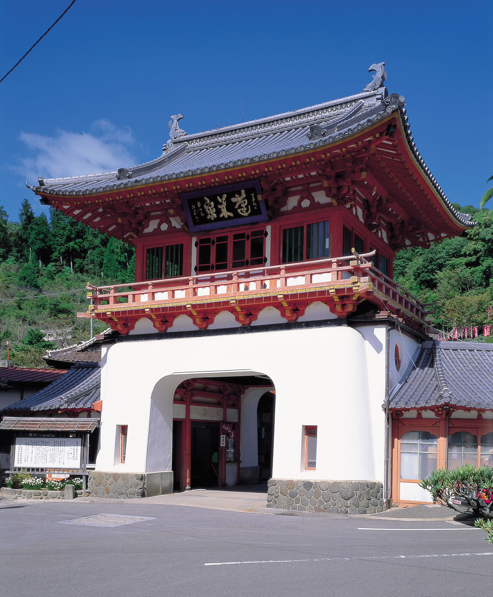
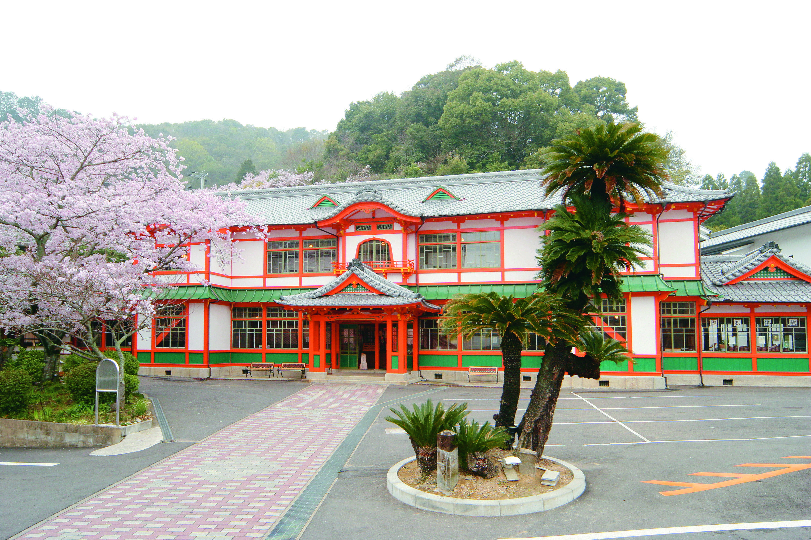

佐賀県へようこそ！
佐賀県武雄市は、九州佐賀国際空港(※)から車で約1時間、福岡県JR博多駅から特急で約1時間と、
アクセス良好とはお世辞にも言い難いけれど、住みやすさと観光地としての魅力を備えた素晴らしい街です。
（※現在は期間限定で「佐賀キングダム空港」。詳しくはこちらをチェック！）
このページでは、私の地元、佐賀県武雄市の中心である武雄町だけにフォーカスして紹介していきます。
1300年の歴史を誇る武雄温泉

温泉の入口にそびえ立つ「武雄温泉楼門」は、東京駅を設計した日本近代建築の父と呼ばれる佐賀県出身の建築家、辰野金吾氏によるもので、111年前に建築されました。
竜宮城を連想させる鮮やかな色彩と形で、天平式楼門と呼ばれ、釘を一本も使っていない独創的な建築物であり、国重要文化財に指定されています。
楼門の２階天井の角には、馬、うさぎ、鳥、ねずみの４つの干支が彫られているのですが、謎のセレクトだと思いませんか…？
実は、同じく辰野金吾氏の設計である東京駅に、残り８つの干支のレリーフがあるんです！！あゝ、なんてロマンがあることでしょう！
首都東京と故郷佐賀にある２つの重要文化財をあわせて初めて十二支が完成する…！
まだまだ語りたいところですが、「東京駅を使う人はいっぺん楼門ば見にきんしゃい」と言って終わります。（笑）

武雄温泉楼門を抜けた先にある「武雄温泉新館」は、国指定重要文化財に指定されており、当時の大衆浴場の様子や、
その当時もっとも貴重であったマジョリカタイル、陶板デザインタイルなども見学できます。
館内には、武雄温泉の資料館や「武雄氷菓」というおしゃれなデザート屋さんがあります。恥ずかしながらそんな店が開店していると知らず、
香川に来る前、３月に駆け込みで食べに行きました！次回帰省したらたくさんお金を落とそうと思います。（笑）
佐賀県の企業が作るサイダーや陶磁器の小物やアクセサリーも並んでおり、食べて美味しい見て嬉しいの超幸せ空間です。
話は戻りまして、建物について触れておきたいと思います。館内のいたるところから滲み出るレトロ感...！
見慣れないおしゃれなタイルやネオンの看板、水道の蛇口など、なぜか懐かしさを感じる大浴場を見学できます。
一番気になるのは浴槽の深さですが、ご想像におまかせします！こんな場所のお湯に浸かってみたかったなという惜しい気持ちと、
いろいろ考えると現代のほうがいいかなという現実的な気持ちが混在します。（笑）
現在も、大衆浴場の「元湯」と「蓬莱湯」、貸し切りの「殿様湯」と「家老湯」などが楽しめますので、ぜひ立ち寄ってみてください。
きっと温泉とレトロな雰囲気に癒されるはずです！